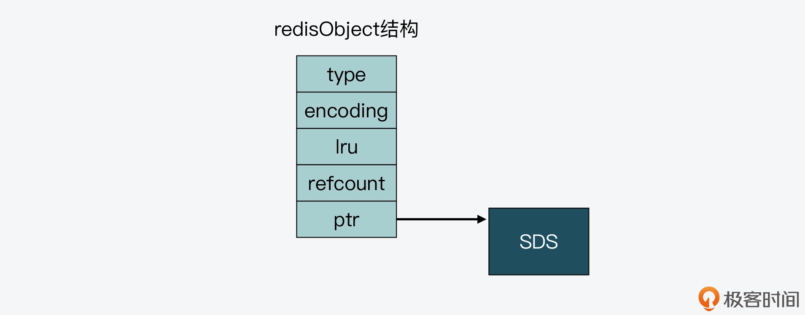
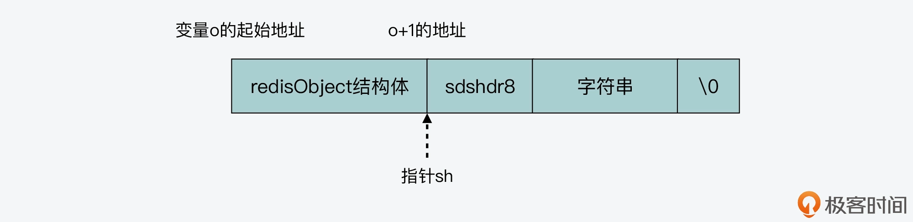
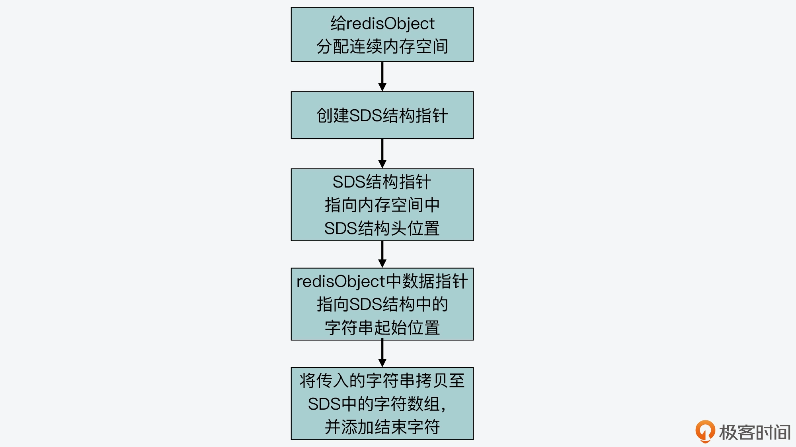

- 00 开篇词 阅读Redis源码能给你带来什么？.md
- 01 带你快速攻略Redis源码的整体架构.md
- 02 键值对中字符串的实现，用char还是结构体？.md
- 03 如何实现一个性能优异的Hash表？.md
- 04 内存友好的数据结构该如何细化设计？.md
- 05 有序集合为何能同时支持点查询和范围查询？.md
- 06 从ziplist到quicklist，再到listpack的启发.md
- 07 为什么Stream使用了Radix Tree？.md
- 08 Redis server启动后会做哪些操作？.md
- 09 Redis事件驱动框架（上）：何时使用select、poll、epoll？.md
- 10 Redis事件驱动框架（中）：Redis实现了Reactor模型吗？.md
- 11 Redis事件驱动框架（下）：Redis有哪些事件？.md
- 12 Redis真的是单线程吗？.md
- 13 Redis 6.0多IO线程的效率提高了吗？.md
- 14 从代码实现看分布式锁的原子性保证.md
- 15 为什么LRU算法原理和代码实现不一样？.md
- 16 LFU算法和其他算法相比有优势吗？.md
- 17 Lazy Free会影响缓存替换吗？.md
- 18 如何生成和解读RDB文件？.md
- 19 AOF重写（上）：触发时机与重写的影响.md
- 20 AOF重写（下）：重写时的新写操作记录在哪里？.md
- 21 主从复制：基于状态机的设计与实现.md
- 22 哨兵也和Redis实例一样初始化吗？.md
- 23 从哨兵Leader选举学习Raft协议实现（上）.md
- 24 从哨兵Leader选举学习Raft协议实现（下）.md
- 25 PubSub在主从故障切换时是如何发挥作用的？.md
- 26 从Ping-Pong消息学习Gossip协议的实现.md
- 27 从MOVED、ASK看集群节点如何处理命令？.md
- 28 Redis Cluster数据迁移会阻塞吗？.md
- 29 如何正确实现循环缓冲区？.md
- 30 如何在系统中实现延迟监控？.md
- 31 从Module的实现学习动态扩展功能.md
- 32 如何在一个系统中实现单元测试？.md
- 结束语 Redis源码阅读，让我们从新开始.md
04 内存友好的数据结构该如何细化设计？
今天我们来聊聊，Redis 中是如何通过优化设计数据结构，来提升内存利用率的。
我们知道 Redis 是内存数据库，所以，高效使用内存对 Redis 的实现来说非常重要。而实际上，Redis 主要是通过两大方面的技术来提升内存使用效率的，分别是数据结构的优化设计与使用，以及内存数据按一定规则淘汰。
关于内存数据按规则淘汰，这是通过 Redis 内存替换策略实现的，也就是将很少使用的数据从内存中淘汰，从而把有限的内存空间用于保存会被频繁访问的数据。这部分的设计与实现，主要和内存替换策略有关，我会在后面的缓存模块给你详细介绍。
所以这节课，我主要是带你学习 Redis 数据结构在面向内存使用效率方面的优化，其中包括两方面的设计思路：一是内存友好的数据结构设计；二是内存友好的数据使用方式。
这两方面的设计思路和实现方法是具有通用性的，当你在设计系统软件时，如果需要对内存使用精打细算，以便节省内存开销，这两种设计方法和实现考虑就非常值得学习和掌握。
好，接下来，我们就先来学习下内存友好的数据结构设计。
内存友好的数据结构
首先要知道，在 Redis 中，有三种数据结构针对内存使用效率做了设计优化，分别是简单动态字符串（SDS）、压缩列表（ziplist）和整数集合（intset）。下面，我们就分别来学习一下。
SDS 的内存友好设计
实际上，我在【第 2 讲】中就已经给你介绍过 SDS 的结构设计，这里我们先做个简单的回顾：SDS 设计了不同类型的结构头，包括 sdshdr8、sdshdr16、sdshdr32 和 sdshdr64。这些不同类型的结构头可以适配不同大小的字符串，从而避免了内存浪费。
不过，SDS 除了使用精巧设计的结构头外，在保存较小字符串时，其实还使用了嵌入式字符串的设计方法。这种方法避免了给字符串分配额外的空间，而是可以让字符串直接保存在 Redis 的基本数据对象结构体中。
所以这也就是说，要想理解嵌入式字符串的设计与实现，我们就需要先来了解下，Redis 使用的基本数据对象结构体 redisObject 是什么样的。
redisObject 结构体与位域定义方法
redisObject 结构体是在 server.h 文件中定义的，主要功能是用来保存键值对中的值。这个结构一共定义了 4 个元数据和一个指针。
- type：redisObject 的数据类型，是应用程序在 Redis 中保存的数据类型，包括 String、List、Hash 等。
- encoding：redisObject 的编码类型，是 Redis 内部实现各种数据类型所用的数据结构。
- lru：redisObject 的 LRU 时间。
- refcount：redisObject 的引用计数。
- ptr：指向值的指针。
下面的代码展示了 redisObject 结构体的定义：
typedef struct redisObject {
unsigned type:4; //redisObject的数据类型，4个bits
unsigned encoding:4; //redisObject的编码类型，4个bits
unsigned lru:LRU_BITS; //redisObject的LRU时间，LRU_BITS为24个bits
int refcount; //redisObject的引用计数，4个字节
void *ptr; //指向值的指针，8个字节
} robj;
从代码中我们可以看到，在 type、encoding 和 lru 三个变量后面都有一个冒号，并紧跟着一个数值，表示该元数据占用的比特数。其中，type 和 encoding 分别占 4bits。而 lru 占用的比特数，是由 server.h 中的宏定义 LRU_BITS 决定的，它的默认值是 24bits，如下所示：
#define LRU_BITS 24
而这里我想让你学习掌握的，就是这种变量后使用冒号和数值的定义方法。这实际上是 C 语言中的位域定义方法，可以用来有效地节省内存开销。
这种方法比较适用的场景是，当一个变量占用不了一个数据类型的所有 bits 时，就可以使用位域定义方法，把一个数据类型中的 bits，划分成多个位域，每个位域占一定的 bit 数。这样一来，一个数据类型的所有 bits 就可以定义多个变量了，从而也就有效节省了内存开销。
此外，你可能还会发现，对于 type、encoding 和 lru 三个变量来说，它们的数据类型都是 unsigned。已知一个 unsigned 类型是 4 字节，但这三个变量，是分别占用了一个 unsigned 类型 4 字节中的 4bits、4bits 和 24bits。因此，相较于三个变量，每个变量用一个 4 字节的 unsigned 类型定义来说，使用位域定义方法可以让三个变量只用 4 字节，最后就能节省 8 字节的开销。
所以，当你在设计开发内存敏感型的软件时，就可以把这种位域定义方法使用起来。
好，了解了 redisObject 结构体和它使用的位域定义方法以后，我们再来看嵌入式字符串是如何实现的。
嵌入式字符串
前面我说过，SDS 在保存比较小的字符串时，会使用嵌入式字符串的设计方法，将字符串直接保存在 redisObject 结构体中。然后在 redisObject 结构体中，存在一个指向值的指针 ptr，而一般来说，这个 ptr 指针会指向值的数据结构。
这里我们就以创建一个 String 类型的值为例，Redis 会调用 createStringObject 函数，来创建相应的 redisObject，而这个 redisObject 中的 ptr 指针，就会指向 SDS 数据结构，如下图所示。

在 Redis 源码中，createStringObject 函数会根据要创建的字符串的长度，决定具体调用哪个函数来完成创建。
那么针对这个 createStringObject 函数来说，它的参数是字符串 ptr 和字符串长度 len。当 len 的长度大于 OBJ_ENCODING_EMBSTR_SIZE_LIMIT 这个宏定义时，createStringObject 函数会调用 createRawStringObject 函数，否则就调用 createEmbeddedStringObject 函数。而在我们分析的 Redis 5.0.8 源码版本中，这个 OBJ_ENCODING_EMBSTR_SIZE_LIMIT 默认定义为 44 字节。
这部分代码如下所示：
#define OBJ_ENCODING_EMBSTR_SIZE_LIMIT 44
robj *createStringObject(const char *ptr, size_t len) {
//创建嵌入式字符串，字符串长度小于等于44字节
if (len <= OBJ_ENCODING_EMBSTR_SIZE_LIMIT)
return createEmbeddedStringObject(ptr,len);
//创建普通字符串，字符串长度大于44字节
else
return createRawStringObject(ptr,len);
}
现在，我们就来分析一下 createStringObject 函数的源码实现，以此了解大于 44 字节的普通字符串和小于等于 44 字节的嵌入式字符串分别是如何创建的。
首先，对于 createRawStringObject 函数来说，它在创建 String 类型的值的时候，会调用 createObject 函数。
补充：createObject 函数主要是用来创建 Redis 的数据对象的。因为 Redis 的数据对象有很多类型，比如 String、List、Hash 等，所以在 createObject 函数的两个参数中，有一个就是用来表示所要创建的数据对象类型，而另一个是指向数据对象的指针。
然后，createRawStringObject 函数在调用 createObject 函数时，会传递 OBJ_STRING 类型，表示要创建 String 类型的对象，以及传递指向 SDS 结构的指针，如以下代码所示。这里需要注意的是，指向 SDS 结构的指针是由 sdsnewlen 函数返回的，而 sdsnewlen 函数正是用来创建 SDS 结构的。
robj *createRawStringObject(const char *ptr, size_t len) {
return createObject(OBJ_STRING, sdsnewlen(ptr,len));
}
最后，我们再来进一步看下 createObject 函数。这个函数会把参数中传入的、指向 SDS 结构体的指针直接赋值给 redisObject 中的 ptr，这部分的代码如下所示：
robj *createObject(int type, void *ptr) {
//给redisObject结构体分配空间
robj *o = zmalloc(sizeof(*o));
//设置redisObject的类型
o->type = type;
//设置redisObject的编码类型，此处是OBJ_ENCODING_RAW，表示常规的SDS
o->encoding = OBJ_ENCODING_RAW;
//直接将传入的指针赋值给redisObject中的指针。
o->ptr = ptr;
o->refcount = 1;
…
return o;
}
为了方便理解普通字符串创建方法，我画了一张图，你可以看下。

这也就是说，在创建普通字符串时，Redis 需要分别给 redisObject 和 SDS 分别分配一次内存，这样就既带来了内存分配开销，同时也会导致内存碎片。因此，当字符串小于等于 44 字节时，Redis 就使用了嵌入式字符串的创建方法，以此减少内存分配和内存碎片。
而这个创建方法，就是由我们前面提到的 createEmbeddedStringObject 函数来完成的，该函数会使用一块连续的内存空间，来同时保存 redisObject 和 SDS 结构。这样一来，内存分配只有一次，而且也避免了内存碎片。
createEmbeddedStringObject 函数的原型定义如下，它的参数就是从 createStringObject 函数参数中获得的字符串指针 ptr，以及字符串长度 len。
robj *createEmbeddedStringObject(const char *ptr, size_t len)
那么下面，我们就来具体看看，createEmbeddedStringObject 函数是如何把 redisObject 和 SDS 放置在一起的。
首先，createEmbeddedStringObject 函数会分配一块连续的内存空间，这块内存空间的大小等于 redisObject 结构体的大小、SDS 结构头 sdshdr8 的大小和字符串大小的总和，并且再加上 1 字节。注意，这里最后的 1 字节是 SDS 中加在字符串最后的结束字符“\0”。
这块连续内存空间的分配情况如以下代码所示：
robj *o = zmalloc(sizeof(robj)+sizeof(struct sdshdr8)+len+1);
你也可以参考下图，其中展示了这块内存空间的布局。

好，那么 createEmbeddedStringObject 函数在分配了内存空间之后，就会创建 SDS 结构的指针 sh，并把 sh 指向这块连续空间中 SDS 结构头所在的位置，下面的代码显示了这步操作。其中，o 是 redisObject 结构体的变量，o+1 表示将内存地址从变量 o 开始移动一段距离，而移动的距离等于 redisObject 这个结构体的大小。
struct sdshdr8 *sh = (void*)(o+1);
经过这步操作后，sh 指向的位置就如下图所示：

紧接着，createEmbeddedStringObject 函数会把 redisObject 中的指针 ptr，指向 SDS 结构中的字符数组。
如以下代码所示，其中 sh 是刚才介绍的指向 SDS 结构的指针，属于 sdshdr8 类型。而 sh+1 表示把内存地址从 sh 起始地址开始移动一定的大小，移动的距离等于 sdshdr8 结构体的大小。
o->ptr = sh+1;
这步操作完成后，redisObject 结构体中的指针 ptr 的指向位置就如下图所示，它会指向 SDS 结构头的末尾，同时也是字符数组的起始位置：

最后，createEmbeddedStringObject 函数会把参数中传入的指针 ptr 指向的字符串，拷贝到 SDS 结构体中的字符数组，并在数组最后添加结束字符。这部分代码如下所示：
memcpy(sh->buf,ptr,len);
sh->buf[len] = '\0';
下面这张图，也展示了 createEmbeddedStringObject 创建嵌入式字符串的过程，你可以再整体来看看。

总之，你可以记住，Redis 会通过设计实现一块连续的内存空间，把 redisObject 结构体和 SDS 结构体紧凑地放置在一起。这样一来，对于不超过 44 字节的字符串来说，就可以避免内存碎片和两次内存分配的开销了。
而除了嵌入式字符串之外，Redis 还设计了压缩列表和整数集合，这也是两种紧凑型的内存数据结构，所以下面我们再来学习下它们的设计思路。
压缩列表和整数集合的设计
首先你要知道，List、Hash 和 Sorted Set 这三种数据类型，都可以使用压缩列表（ziplist）来保存数据。压缩列表的函数定义和实现代码分别在 ziplist.h 和 ziplist.c 中。
不过，我们在 ziplist.h 文件中其实根本看不到压缩列表的结构体定义。这是因为压缩列表本身就是一块连续的内存空间，它通过使用不同的编码来保存数据。
这里为了方便理解压缩列表的设计与实现，我们先来看看它的创建函数 ziplistNew，如下所示：
unsigned char *ziplistNew(void) {
//初始分配的大小
unsigned int bytes = ZIPLIST_HEADER_SIZE+ZIPLIST_END_SIZE;
unsigned char *zl = zmalloc(bytes);
…
//将列表尾设置为ZIP_END
zl[bytes-1] = ZIP_END;
return zl;
}
实际上，ziplistNew 函数的逻辑很简单，就是创建一块连续的内存空间，大小为 ZIPLIST_HEADER_SIZE 和 ZIPLIST_END_SIZE 的总和，然后再把该连续空间的最后一个字节赋值为 ZIP_END，表示列表结束。
另外你要注意的是，在上面代码中定义的三个宏 ZIPLIST_HEADER_SIZE、ZIPLIST_END_SIZE 和 ZIP_END，在 ziplist.c 中也分别有定义，分别表示 ziplist 的列表头大小、列表尾大小和列表尾字节内容，如下所示。
//ziplist的列表头大小，包括2个32 bits整数和1个16bits整数，分别表示压缩列表的总字节数，列表最后一个元素的离列表头的偏移，以及列表中的元素个数
//ziplist的列表头大小，包括2个32 bits整数和1个16bits整数，分别表示压缩列表的总字节数，列表最后一个元素的离列表头的偏移，以及列表中的元素个数
#define ZIPLIST_HEADER_SIZE (sizeof(uint32_t)*2+sizeof(uint16_t))
//ziplist的列表尾大小，包括1个8 bits整数，表示列表结束。
#define ZIPLIST_END_SIZE (sizeof(uint8_t))
//ziplist的列表尾字节内容
#define ZIP_END 255
那么，在创建一个新的 ziplist 后，该列表的内存布局就如下图所示。注意，此时列表中还没有实际的数据。

然后，当我们往 ziplist 中插入数据时，ziplist 就会根据数据是字符串还是整数，以及它们的大小进行不同的编码。这种根据数据大小进行相应编码的设计思想，正是 Redis 为了节省内存而采用的。
**那么，ziplist 是如何进行编码呢？**要学习编码的实现，我们要先了解 ziplist 中列表项的结构。
ziplist 列表项包括三部分内容，分别是前一项的长度（prevlen）、当前项长度信息的编码结果（encoding），以及当前项的实际数据（data）。下面的图展示了列表项的结构（图中除列表项之外的内容分别是 ziplist 内存空间的起始和尾部）。

实际上，所谓的编码技术，就是指用不同数量的字节来表示保存的信息。在 ziplist 中，编码技术主要应用在列表项中的 prevlen 和 encoding 这两个元数据上。而当前项的实际数据 data，则正常用整数或是字符串来表示。
所以这里，我们就先来看下 prevlen 的编码设计。ziplist 中会包含多个列表项，每个列表项都是紧挨着彼此存放的，如下图所示。

而为了方便查找，每个列表项中都会记录前一项的长度。因为每个列表项的长度不一样，所以如果使用相同的字节大小来记录 prevlen，就会造成内存空间浪费。
我给你举个例子，假设我们统一使用 4 字节记录 prevlen，如果前一个列表项只是一个字符串“redis”，长度为 5 个字节，那么我们用 1 个字节（8 bits）就能表示 256 字节长度（2 的 8 次方等于 256）的字符串了。此时，prevlen 用 4 字节记录，其中就有 3 字节是浪费掉了。
好，我们再回过头来看，ziplist 在对 prevlen 编码时，会先调用 zipStorePrevEntryLength 函数，用于判断前一个列表项是否小于 254 字节。如果是的话，那么 prevlen 就使用 1 字节表示；否则，zipStorePrevEntryLength 函数就调用 zipStorePrevEntryLengthLarge 函数进一步编码。这部分代码如下所示：
//判断prevlen的长度是否小于ZIP_BIG_PREVLEN，ZIP_BIG_PREVLEN等于254
if (len < ZIP_BIG_PREVLEN) {
//如果小于254字节，那么返回prevlen为1字节
p[0] = len;
return 1;
} else {
//否则，调用zipStorePrevEntryLengthLarge进行编码
return zipStorePrevEntryLengthLarge(p,len);
}
也就是说，zipStorePrevEntryLengthLarge 函数会先将 prevlen 的第 1 字节设置为 254，然后使用内存拷贝函数 memcpy，将前一个列表项的长度值拷贝至 prevlen 的第 2 至第 5 字节。最后，zipStorePrevEntryLengthLarge 函数返回 prevlen 的大小，为 5 字节。
if (p != NULL) {
//将prevlen的第1字节设置为ZIP_BIG_PREVLEN，即254
p[0] = ZIP_BIG_PREVLEN;
//将前一个列表项的长度值拷贝至prevlen的第2至第5字节，其中sizeof(len)的值为4
memcpy(p+1,&len,sizeof(len));
…
}
//返回prevlen的大小，为5字节
return 1+sizeof(len);
好，在了解了 prevlen 使用 1 字节和 5 字节两种编码方式后，我们再来学习下 encoding 的编码方法。
我们知道，一个列表项的实际数据，既可以是整数也可以是字符串。整数可以是 16、32、64 等字节长度，同时字符串的长度也可以大小不一。
所以，ziplist 在 zipStoreEntryEncoding 函数中，针对整数和字符串，就分别使用了不同字节长度的编码结果。下面的代码展示了 zipStoreEntryEncoding 函数的部分代码，你可以看到当数据是不同长度字符串或是整数时，编码结果的长度 len 大小不同。
//默认编码结果是1字节
unsigned char len = 1;
//如果是字符串数据
if (ZIP_IS_STR(encoding)) {
//字符串长度小于等于63字节（16进制为0x3f）
if (rawlen <= 0x3f) {
//默认编码结果是1字节
…
}
//字符串长度小于等于16383字节（16进制为0x3fff）
else if (rawlen <= 0x3fff) {
//编码结果是2字节
len += 1;
…
}
//字符串长度大于16383字节
else {
//编码结果是5字节
len += 4;
…
}
} else {
/* 如果数据是整数，编码结果是1字节*/
if (!p) return len;
...
}
简而言之，针对不同长度的数据，使用不同大小的元数据信息（prevlen 和 encoding），这种方法可以有效地节省内存开销。当然，除了 ziplist 之外，Redis 还设计了一个内存友好的数据结构，这就是整数集合（intset），它是作为底层结构来实现 Set 数据类型的。
和 SDS 嵌入式字符串、ziplist 类似，整数集合也是一块连续的内存空间，这一点我们从整数集合的定义中就可以看到。intset.h 和 intset.c 分别包括了整数集合的定义和实现。
下面的代码展示了 intset 的结构定义。我们可以看到，整数集合结构体中记录数据的部分，就是一个 int8_t 类型的整数数组 contents。从内存使用的角度来看，整数数组就是一块连续内存空间，所以这样就避免了内存碎片，并提升了内存使用效率。
typedef struct intset {
uint32_t encoding;
uint32_t length;
int8_t contents[];
} intset;
好了，到这里，我们就已经了解了 Redis 针对内存开销所做的数据结构优化，分别是 SDS 嵌入式字符串、压缩列表和整数集合。
而除了对数据结构做优化，Redis 在数据访问上，也会尽量节省内存开销，接下来我们就一起来学习下。
节省内存的数据访问
我们知道，在 Redis 实例运行时，有些数据是会被经常访问的，比如常见的整数，Redis 协议中常见的回复信息，包括操作成功（“OK”字符串）、操作失败（ERR），以及常见的报错信息。
所以，为了避免在内存中反复创建这些经常被访问的数据，Redis 就采用了共享对象的设计思想。这个设计思想很简单，就是把这些常用数据创建为共享对象，当上层应用需要访问它们时，直接读取就行。
现在我们就来做个假设。有 1000 个客户端，都要保存“3”这个整数。如果 Redis 为每个客户端，都创建了一个值为 3 的 redisObject，那么内存中就会有大量的冗余。而使用了共享对象方法后，Redis 在内存中只用保存一个 3 的 redisObject 就行，这样就有效节省了内存空间。
以下代码展示的是 server.c 文件中，创建共享对象的函数 createSharedObjects，你可以看下。
void createSharedObjects(void) {
…
//常见回复信息
shared.ok = createObject(OBJ_STRING,sdsnew("+OK\r\n"));
shared.err = createObject(OBJ_STRING,sdsnew("-ERR\r\n"));
…
//常见报错信息
shared.nokeyerr = createObject(OBJ_STRING,sdsnew("-ERR no such key\r\n"));
shared.syntaxerr = createObject(OBJ_STRING,sdsnew("-ERR syntax error\r\n"));
//0到9999的整数
for (j = 0; j < OBJ_SHARED_INTEGERS; j++) {
shared.integers[j] =
makeObjectShared(createObject(OBJ_STRING,(void*)(long)j));
…
}
…
}
小结
降低内存开销，对于 Redis 这样的内存数据库来说非常重要。今天这节课，我们了解了 Redis 用于优化内存使用效率的两种方法：内存优化的数据结构设计和节省内存的共享数据访问。
那么，对于实现数据结构来说，如果想要节省内存，Redis 就给我们提供了两个优秀的设计思想：一个是使用连续的内存空间，避免内存碎片开销；二个是针对不同长度的数据，采用不同大小的元数据，以避免使用统一大小的元数据，造成内存空间的浪费。
另外在数据访问方面，你也要知道，使用共享对象其实可以避免重复创建冗余的数据，从而也可以有效地节省内存空间。不过，共享对象主要适用于只读场景，如果一个字符串被反复地修改，就无法被多个请求共享访问了。所以这一点，你在应用时也需要注意一下。
每课一问
SDS 判断是否使用嵌入式字符串的条件是 44 字节，你知道为什么是 44 字节吗？
欢迎在留言区分享你的思考过程，我们一起交流讨论。如果觉得有收获，也欢迎你把今天的内容分享给更多的朋友。
© 2019 - 2023 Liangliang Lee. Powered by Vert.x and hexo-theme-book.